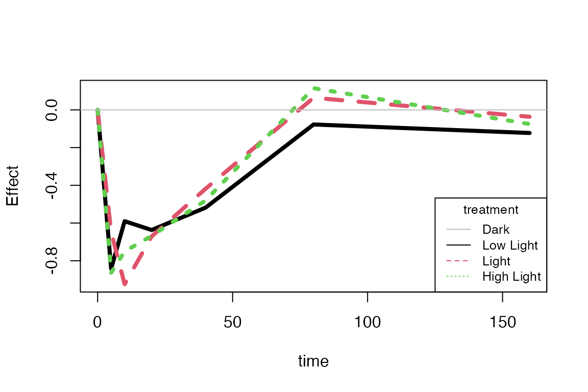

# Start the HDANOVA R package
library(HDANOVA)
#>
#> Attaching package: 'HDANOVA'
#> The following object is masked from 'package:stats':
#>
#> loadingsAdditional methods of HD-ANOVA
The examples shown here are HD-ANOVA methods that share aspects with ASCA.
- Principal Response Curves (PRC)
- Permutation Based MANOVA (PERMANOVA)
Principal Response Curves (PRC)
The PRC implementation we have wrapped is from the vegan package. A single treatment factor and a time factor are accepted together with a response matrix. The first level of the treatment factor is used as a reference level, effectively set to zero. As the vegan package is aimed at community ecology, the responses are called species. In our case, the responses are compounds from the Caldana data.
# Load Caldana data
data(caldana)
prc.cal <- prc(compounds ~ light * time, caldana)
summary(prc.cal)
#>
#> Call:
#> prc(formula = compounds ~ light * time, data = caldana)
#> Species scores:
#> Alanine Valine
#> 0.900828 0.175768
#> Leucine Isoleucine
#> -0.657559 -0.264687
#> Proline Serine
#> 1.141926 -0.051640
#> Threonine beta-alanine
#> 0.075174 -0.726471
#> Hydroxyproline GABA
#> -0.007045 -1.087892
#> Aspartate Asparagine
#> -0.696076 -0.338664
#> Methionine O-acetyl-serine
#> 0.863337 0.205739
#> Glutamate Phenylalanine
#> -0.337782 1.245032
#> Ornithine Glutamine
#> 0.041141 1.302687
#> Lysine Tyrosine
#> -1.175389 -0.606966
#> Threonic-acid Citrulline-Arginine
#> -0.323093 0.526770
#> Pyruvic-acid Citric-acid
#> 0.473488 -0.414141
#> Succinic-acid Fumaric-acid
#> -0.690860 0.005060
#> Malic-acid Lactic-acid
#> 0.006521 -0.497413
#> Glycolic-acid Benzoic-acid
#> 1.624649 -0.141741
#> Maleic-acid Nicotinic-acid
#> 0.767982 -0.060987
#> Itaconic-acid Citramalate
#> -0.169012 0.050705
#> 4-hydroxy-benzoic-acid Dehydroascorbic-acid-dimer
#> -0.191369 0.062572
#> Gluconic-acid Dehydroascorbic-acid
#> -0.159411 -0.108530
#> Ascorbic-acid 4-Hydroxycinnamic-acid
#> -0.232603 -0.133527
#> Similar-to-Adenine Shikimate
#> 0.010357 0.878436
#> Erythritol Arabinose
#> -0.068112 -0.110114
#> Arabitol Fucose
#> -0.337455 -0.051972
#> Fructose Mannitol
#> 3.606930 0.215745
#> Galactose Glucose
#> 0.097331 2.777645
#> Sucrose Maltose
#> 0.615215 -0.263945
#> Trehalose Galactinol
#> -0.195746 0.211351
#> myo-inositol Uracil
#> -0.070161 -1.067653
#> Putrescine Ethanolamine
#> -0.210320 -0.546516
#> Glycerol Indole-3-acetonitrile
#> -0.146868 0.185760
#> Sinapic-acid Palmitic-acid
#> 0.131682 -0.267378
#> Octadecanoic-acid Docosanoic-acid
#> -0.361142 -0.299480
#> Tetracosanoic-acid Hexacosanoic-acid
#> 0.060571 0.188997
#> Octacosanoic-acid
#> 0.167153
#>
#> Coefficients for treatment + time:treatment interaction
#> which are contrasts to treatment Dark
#> rows are treatment, columns are time
#> 0 5 10 20 40 80 160
#> Low Light 1.601e-15 -0.003685 -0.05458 -0.121789 -0.006526 0.1098 0.1833
#> Light 3.011e-15 -0.038250 0.10345 -0.084547 0.098440 0.2416 0.3368
#> High Light 1.620e-15 -0.010944 -0.01016 0.009301 0.312173 0.6746 0.7716The default plot for PRC is a plot of treatment + time:treatment. As we can see in the plot, the “Dark” level is the reference level from which the other levels are contrasted.
plot(prc.cal, species = FALSE, axis = 2, lwd = 4, legpos = "bottomright")
Permutation Based MANOVA (PERMANOVA)
The PERMANOVA implementation we have wrapped is from the vegan package. Our wrapper takes care of the specialised formatting needed for the inputs. By default, 999 permutations are performed for the factors, and a standard Multivariate ANOVA is returned with permutation-based p-values.
permanova.cal <- permanova(compounds ~ light * time, caldana)
permanova.cal
#> Permutation test for adonis under reduced model
#> Permutation: free
#> Number of permutations: 999
#>
#> vegan::adonis2(formula = formula, data = data)
#> Df SumOfSqs R2 F Pr(>F)
#> Model 27 0.79189 0.35355 2.2687 0.001 ***
#> Residual 112 1.44793 0.64645
#> Total 139 2.23982 1.00000
#> ---
#> Signif. codes: 0 '***' 0.001 '**' 0.01 '*' 0.05 '.' 0.1 ' ' 1